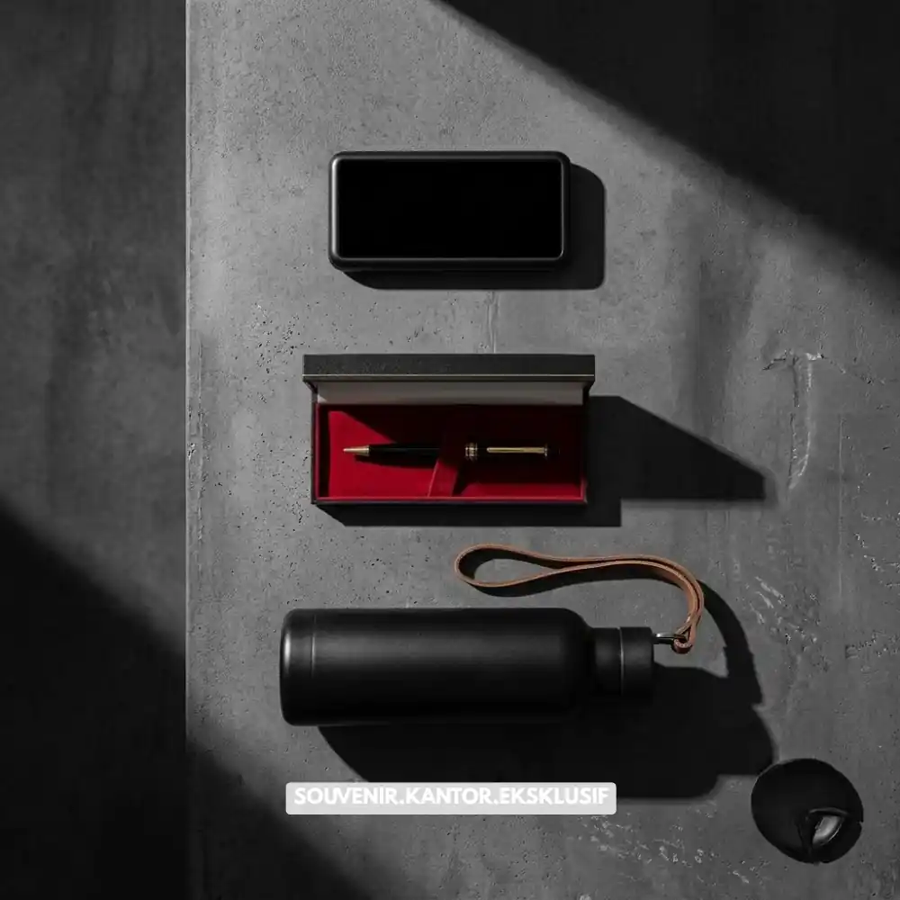
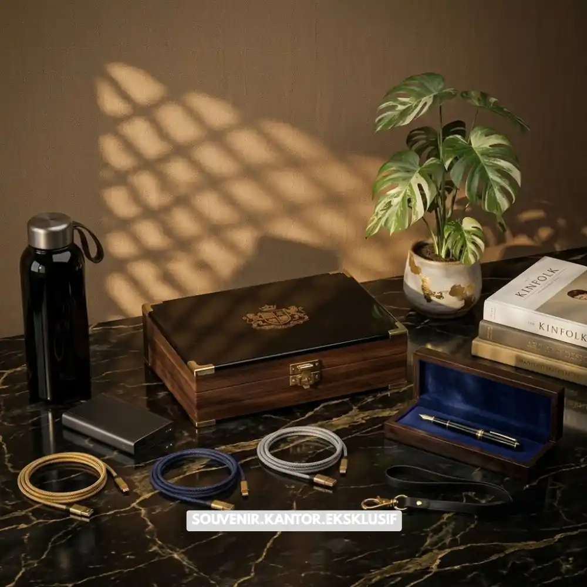
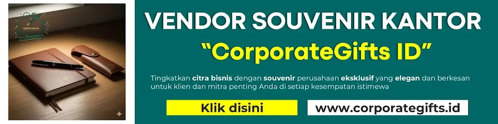

Daftar Isi
Dalam menentukan vendor corporate gift set yang ideal, Anda harus mempertimbangkan portofolio, kemampuan kustomisasi, kualitas sampel produk, dan rekam jejak ketepatan waktu pengiriman sebelum membuat keputusan untuk berkolaborasi.
- Periksa portofolio dan pengalaman vendor sebelumnya
- Mohon untuk mendapatkan sampel produk guna menilai kualitas secara langsung
- Pastikan vendor mampu melakukan kustomisasi sesuai identitas brand
- Tanyakan estimasi waktu produksi dan pengiriman secara jelas
- Bandingkan harga dari beberapa vendor sebelum memutuskan
Bagaimana Cara Menentukan Vendor Corporate Gift Set yang Paling Sesuai?
Memilih vendor corporate gift set yang tepat memerlukan evaluasi terhadap portofolio, kualitas produk, kemampuan kustomisasi, dan konsistensi layanan sebelum melakukan pemesanan dalam jumlah besar.
Langkah-langkah yang dapat dilakukan:
Periksa Portofolio dan Pengalaman Vendor
Periksa catatan vendor melalui proyek yang telah dilaksanakan sebelumnya, mencakup tipe klien yang pernah ditangani dan ragam produk yang mereka sediakan. Vendor dengan portofolio yang jelas biasanya lebih mudah diajak berdiskusi mengenai kebutuhan spesifik perusahaan.
Minta Sampel Produk Sebelum Produksi Massal
Sampel produk membantu memastikan kualitas bahan, ketahanan barang, dan hasil cetak logo sesuai ekspektasi sebelum dilakukan pemesanan dalam jumlah besar.
Pastikan Kemampuan Kustomisasi Sesuai Kebutuhan
Silakan ajukan pertanyaan kepada vendor mengenai kemungkinan penyesuaian warna, logo, kemasan, dan pesan pada kartu ucapan agar selaras dengan identitas visual perusahaan.
Konfirmasi Estimasi Waktu Produksi dan Pengiriman
Pentingnya ketepatan waktu tidak dapat diabaikan, terutama ketika gift set dihubungkan dengan momen spesifik seperti hari raya atau acara perusahaan. Pastikan vendor memberikan estimasi yang realistis dan memiliki solusi cadangan jika terjadi keterlambatan.
Apa Saja Kriteria Vendor Gift Set yang Terpercaya?
Jawaban singkat: vendor gift set yang terpercaya umumnya memiliki komunikasi yang responsif, transparansi harga, kualitas produk konsisten, dan kemampuan menangani pesanan dalam skala besar.
Beberapa indikator vendor yang layak dipertimbangkan:
- Menyediakan penawaran harga yang jelas tanpa adanya biaya yang tidak terungkap
- Responsif dalam komunikasi dan proses revisi desain
- Memiliki testimoni atau referensi dari klien sebelumnya
- Menyediakan opsi pengemasan dan pengiriman ke berbagai lokasi

Paket Merchandise Kantor Premium dari Vendor Terpercaya
Apa Kesalahan Umum Saat Memilih Vendor Gift Set?
Kesalahan umum meliputi tidak meminta sampel produk, mengabaikan ulasan vendor sebelumnya, dan hanya berfokus pada harga termurah tanpa mempertimbangkan kualitas.
Beberapa kesalahan yang sering terjadi pada tahap pemilihan vendor:
- Tidak melakukan pemeriksaan sampel produk sebelum memulai produksi massal
- Mengabaikan riwayat atau testimoni vendor sebelumnya
- Memilih vendor hanya berdasarkan harga termurah
- Tidak mengonfirmasi tenggat waktu produksi secara tertulis
- Kurang memperhatikan kejelasan kontrak kerja sama
Bagaimana Cara Membandingkan Harga Antar Vendor?
Membandingkan harga antar vendor dilakukan dengan meminta penawaran rinci yang mencakup harga barang, biaya kustomisasi, dan biaya pengiriman agar perbandingan lebih adil dan transparan.
Beberapa hal yang perlu disamakan saat membandingkan penawaran:
- Jenis dan kualitas bahan barang yang ditawarkan
- Biaya tambahan untuk kustomisasi logo atau kemasan
- Minimum order quantity yang disyaratkan vendor
- Estimasi waktu pengerjaan dan biaya pengiriman ke lokasi tujuan
Analisis yang komprehensif memungkinkan perusahaan untuk menghindari kesalahan dalam memilih vendor hanya berdasarkan harga, tanpa memperhatikan kualitas dan layanan secara keseluruhan.

Solusi Gift Set dari Vendor Terpercaya
Kesimpulan
Memilih vendor corporate gift set yang tepat memerlukan proses evaluasi yang cermat, mulai dari portofolio, sampel produk, kemampuan kustomisasi, hingga ketepatan waktu pengiriman.
Perusahaan disarankan untuk tidak terburu-buru dalam mengambil keputusan dan selalu membandingkan beberapa vendor sebelum melakukan pemesanan dalam jumlah besar.
Butuh Bantuan Merancang Corporate Gift Set?
Tim ahli kami siap membantu Anda menyusun paket hadiah eksklusif yang menarik.
Pilihan barang akan disesuaikan dengan ketersediaan budget dan kebutuhan Anda.
Seluruh desain kemasan akan kami selaraskan dengan identitas visual perusahaan Anda.
Dapatkan penawaran harga terbaik untuk pesanan massal!
FAQ Memilih Vendor Corporate Gift Set
Apa langkah-langkah yang harus diambil untuk memilih vendor corporate gift set yang sesuai?
Pilih vendor berdasarkan portofolio, kualitas sampel produk, kemampuan kustomisasi, dan rekam jejak ketepatan waktu pengiriman.
Apakah perlu meminta sampel sebelum pemesanan massal?
Ya, meminta sampel sangat disarankan untuk memastikan kualitas bahan dan hasil cetak sesuai ekspektasi sebelum produksi dalam jumlah besar.
Apa risiko memilih vendor hanya berdasarkan harga termurah?
Risikonya adalah kualitas barang yang kurang sesuai standar, yang dapat menurunkan citra profesional perusahaan di mata penerima gift set.
Maroon Souvenir
Partner Corporate Gift terpercaya di Indonesia. Berpengalaman melayani ratusan perusahaan sejak 2018.
Lihat Portofolio Kami